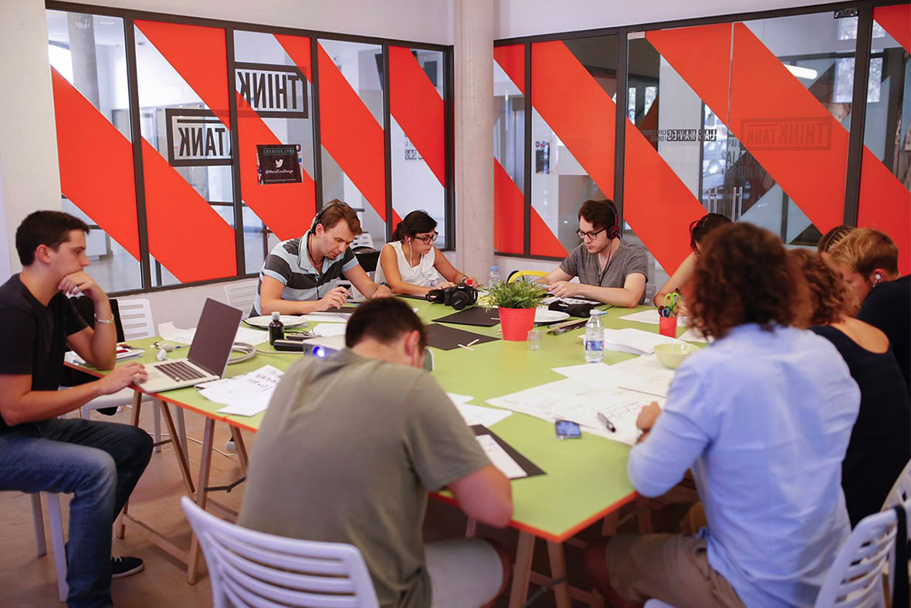

19 лет занимаясь графическим дизайном, я, к своему стыду, не могу вспомнить ни разу, когда я бы брался за создание плаката начиная с листа бумаги, карандашей, красок, кистей. Более того, не припомню чтобы я при этом пытался визуализировать музыкальную композицию, свое видение, свою интерпретацию услышанного, не решая при этом никаких задач и проблем стороннего заказчика. Заказчик в данном случае я сам. Это как свежий горный воздух.
“Трещины есть во всём, благодаря им и проникает свет.”, — Леонард Коэн
Недавно, вписавшись в очередную авантюру, спустя шесть часов работы и многократные прослушивания совершенно великолепной часовой композиции Стива Райха (Steve Reich) — Музыка для 18 музыкантов (Music for 18 Musicians) получилось сделать хороший плакат. Это было очень круто. Особенно запомнились первые моменты, когда сидишь за столом, привычного планшета и ноутбука под рукой нет. Просто лист, пишущие принадлежности, бесконечная музыка в ушах. Вперед! Просто сделай первый шаг и будет уже сложно остановиться, ты же знаешь.